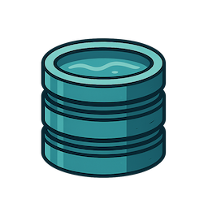
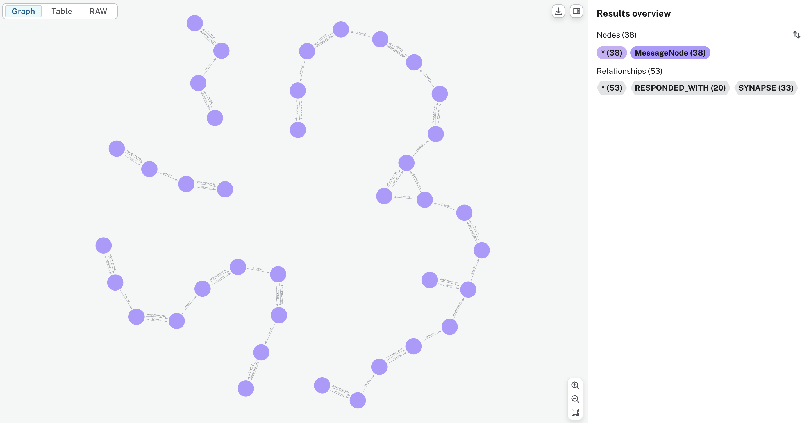

🚧 Under Construction
Reservoir is in active development. It's not ready for production use yet. Expect breaking changes.
Recent Updates:
- ✅ Added intelligent request forwarding for unparseable JSON bodies
- ✅ Added support for
web_search_optionsin chat requests - ✅ Enhanced multi-provider support (OpenAI, Ollama, Mistral, Gemini)
- ✅ Improved model configuration with automatic provider detection
- ✅ Fixed deserialization issues for optional request fields
Reservoir
What is Reservoir?
Reservoir is your helpful memory for AI conversations. It sits between your app and any OpenAI-compatible Chat Completions API, making it easier to have rich, ongoing conversations with your favorite language models from multiple providers.
Why does this matter?
When you use any OpenAI-compatible Chat Completions API, you need to send the full conversation history with every request. For example:
[
{"role": "user", "content": "What is 1 + 1?"},
{"role": "assistant", "content": "2"},
{"role": "user", "content": "What is the answer times 3?"}
]
If you only send the last question, the model won't know what "the answer" refers to. You have to keep track of all previous messages and include them every time.
This can get tricky as conversations grow!
Reservoir acts as a smart proxy: it automatically stores your chat history and inserts the right context into each request. You just talk to any OpenAI-compatible API as usual and Reservoir handles the memory, context, and even finds other relevant messages from your past conversations to help the model give better answers.
Supported Providers:
-
OpenAI (GPT-4, GPT-4o, GPT-3.5-turbo, etc.)
-
Ollama (llama3.2, gemma3, and any local models)
-
Mistral AI (mistral-large-2402, etc.)
-
Google Gemini (gemini-2.0-flash, etc.)
-
Any OpenAI-compatible API endpoint
-
No more manual history management
-
Automatic context enrichment
-
Your data stays private and local
Use Reservoir with Multiple Apps
You can point multiple apps or clients to a single Reservoir instance. This means you can keep context and history across different tools on your computer—like your terminal, a web app, or a chat client. If you want to keep conversations separate, you can use Reservoir's partitioning feature to organize chats by app, project, or any context you choose.
Why Use Reservoir?
- Own your AI history: All your conversations are stored locally, never in the cloud.
- Search and recall: Instantly find previous chats, ideas, or code snippets from your AI interactions.
- Enrich context: Automatically inject relevant history into new prompts for more coherent, personalized responses.
- Visualize conversations: See how your discussions branch and connect over time.
- Stay private: Your data never leaves your device.

Reservoir lets you have conversations with multiple AI models and providers, all while keeping your data private and local. Every interaction is stored on your device, building a personal knowledge base that never leaves your network. A single thread of conversation can span multiple models without losing context, allowing you to seamlessly switch between different AI providers while maintaining the flow of your discussion.
Advanced Features:
- Request Forwarding: Automatically forwards unparseable requests to the appropriate API while logging details for debugging
- Web Search Integration: Pass
web_search_optionsto enable AI models with web search capabilities - Multi-Provider Routing: Automatically routes requests to the correct provider based on model name
- Token Management: Smart truncation to stay within model limits while preserving context
- Flexible Configuration: Environment variables for custom provider endpoints
Table of Contents
Overview
Reservoir intercepts your API calls, enriches them with relevant history, manages token limits, and then forwards them to the actual LLM service.
sequenceDiagram
participant App
participant Reservoir
participant Neo4j
participant LLM as OpenAI/Ollama
App->>Reservoir: Request (e.g. /v1/chat/completions/$USER/my-application)
Reservoir->>Reservoir: Check if last message exceeds token limit (Return error if true)
Reservoir->>Reservoir: Tag with Trace ID + Partition
Reservoir->>Neo4j: Store original request message(s)
%% --- Context Enrichment Steps ---
Reservoir->>Neo4j: Query for similar & recent messages
Neo4j-->>Reservoir: Return relevant context messages
Reservoir->>Reservoir: Inject context messages into request payload
%% --- End Enrichment Steps ---
Reservoir->>Reservoir: Check total token count & truncate if needed (preserving system/last messages)
Reservoir->>LLM: Forward enriched & potentially truncated request
LLM->>Reservoir: Return LLM response
Reservoir->>Neo4j: Store LLM response message
Reservoir->>App: Return LLM response
This sequence diagram provides a high-level overview of how Reservoir processes requests and responses.
Conversation Threads via Synapses
Reservoir uses synapse relationships to create "threads" of semantically related messages within the conversation graph. As messages are added, synapses link them sequentially, forming a continuous flow. When the similarity between messages drops below a threshold, the thread is split, marking a topic change. This results in distinct conversation threads, making it easy to visualize and retrieve related exchanges.
You can see an example of this structure in the following graph visualization:

Documentation
Reservoir's documentation is organized into the following sections:
- Architecture: System and component overview.
- API: API endpoints, usage, and examples.
- Data Model: How data is stored in Neo4j, including the schema.
- Development: Setting up the development environment, running locally, and contributing.
- Features: Key features and future roadmap.
- Deployment: Steps to deploy Reservoir locally or in production.
- FAQ: Troubleshooting, common questions, and tips.
- Request Forwarding: How Reservoir handles unparseable requests.
Quick Start
Reservoir provides an OpenAI-compatible API endpoint. You can use your system username as the partition and your application name as the instance for best results.
Starting the Server
To start the Reservoir server:
cargo run -- start
This command:
- Initializes the vector index in Neo4j for semantic search
- Starts the server on the configured port (default: 3017)
The server will be available at http://localhost:3017 (or your configured port).
Ollama Mode
For seamless integration with Ollama-compatible clients, you can start Reservoir in Ollama mode:
cargo run -- start --ollama
This mode configures Reservoir to act as a drop-in replacement for Ollama, making it easy to add memory and context to existing Ollama-based applications.
Testing Your Setup
You can test your Reservoir installation using the included hurl tests:
# Test all endpoints including request forwarding
./hurl/test.sh
# Test specific endpoints
hurl --variable USER="$USER" --variable OPENAI_API_KEY="$OPENAI_API_KEY" hurl/chat_completion.hurl
hurl --variable USER="$USER" hurl/reservoir-view.hurl
hurl --variable USER="$USER" hurl/reservoir-search.hurl
# Test request forwarding functionality
hurl --variable USER="$USER" hurl/test_forwarding.hurl
./test_forwarding.sh
Or test directly with Ollama (if you have it running):
hurl hurl/ollama_mode.hurl
Import/Export Data
Reservoir supports exporting all message nodes to a JSON file and importing them back into the database. This is useful for backup, migration, or sharing your AI conversation history.
Export all message nodes to JSON
cargo run -- export > messages.json
This command prints all message nodes in the database as pretty-printed JSON to stdout. Redirect the output to a file to save it.
Import message nodes from a JSON file
cargo run -- import path/to/messages.json
View the last N messages
cargo run -- view <COUNT> [--partition <PARTITION>] [--instance <INSTANCE>]
Displays the last <COUNT> messages in the specified partition and instance. If not provided, partition defaults to "default" and instance defaults to the partition.
Example:
cargo run -- view 5 --partition sales --instance eu-west
Sample output:
2025-05-09T14:23:01+00:00 [abc123] user: Hello there!
2025-05-09T14:23:02+00:00 [abc123] assistant: Hi! How can I help?
2025-05-09T14:24:10+00:00 [def456] user: Show me last week's sales report.
2025-05-09T14:24:12+00:00 [def456] assistant: Here is the summary for last week's sales...
2025-05-09T14:25:00+00:00 [ghi789] user: Thanks!
This command reads the specified JSON file (in the same format as the export) and imports all message nodes into the database.
Example Usage
-
Instead of:
https://api.openai.com/v1/chat/completions -
Use:
http://127.0.0.1:3017/partition/$USER/instance/reservoir/v1/chat/completions
Here,
$USERis your system username, andreservoiris the instance name.
Curl Examples
OpenAI Model:
curl "http://127.0.0.1:3017/partition/$USER/instance/reservoir/v1/chat/completions" \
-H "Content-Type: application/json" \
-H "Authorization: Bearer $OPENAI_API_KEY" \
-d '{
"model": "gpt-4",
"messages": [
{
"role": "user",
"content": "Write a one-sentence bedtime story about a brave little toaster."
}
]
}'
Ollama Model (no API key needed):
curl "http://127.0.0.1:3017/partition/$USER/instance/reservoir/v1/chat/completions" \
-H "Content-Type: application/json" \
-d '{
"model": "gemma3",
"messages": [
{
"role": "user",
"content": "Explain quantum computing in simple terms."
}
]
}'
With Web Search Options:
curl "http://127.0.0.1:3017/partition/$USER/instance/reservoir/v1/chat/completions" \
-H "Content-Type: application/json" \
-H "Authorization: Bearer $OPENAI_API_KEY" \
-d '{
"model": "gpt-4o-search-preview",
"messages": [
{
"role": "user",
"content": "What are the latest developments in AI?"
}
],
"web_search_options": {
"enabled": true,
"max_results": 5
}
}'
Python Examples (using openai library)
Basic Usage with OpenAI:
import os
from openai import OpenAI
INSTANCE = "my-application"
PARTITION = os.getenv("USER")
RESERVOIR_PORT = os.getenv('RESERVOIR_PORT', '3017')
RESERVOIR_BASE_URL = f"http://localhost:{RESERVOIR_PORT}/v1/partition/{PARTITION}/instance/{INSTANCE}"
client = OpenAI(
base_url=RESERVOIR_BASE_URL,
api_key=os.environ.get("OPENAI_API_KEY")
)
completion = client.chat.completions.create(
model="gpt-4",
messages=[
{
"role": "user",
"content": "Write a one-sentence bedtime story about a curious robot."
}
]
)
print(completion.choices[0].message.content)
Using Ollama (no API key required):
import os
from openai import OpenAI
INSTANCE = "my-application"
PARTITION = os.getenv("USER")
RESERVOIR_PORT = os.getenv('RESERVOIR_PORT', '3017')
RESERVOIR_BASE_URL = f"http://localhost:{RESERVOIR_PORT}/v1/partition/{PARTITION}/instance/{INSTANCE}"
client = OpenAI(
base_url=RESERVOIR_BASE_URL,
api_key="not-needed-for-ollama" # Ollama doesn't require API keys
)
completion = client.chat.completions.create(
model="llama3.2", # or "gemma3", or any Ollama model
messages=[
{
"role": "user",
"content": "Explain the concept of recursion with a simple example."
}
]
)
print(completion.choices[0].message.content)
With Web Search Options:
completion = client.chat.completions.create(
model="gpt-4o-search-preview",
messages=[
{
"role": "user",
"content": "What are the latest trends in machine learning?"
}
],
extra_body={
"web_search_options": {
"enabled": True,
"max_results": 5
}
}
)
Environment Variables
Reservoir supports customizing provider endpoints via environment variables:
# OpenAI (default: https://api.openai.com/v1/chat/completions)
export RSV_OPENAI_BASE_URL="https://api.openai.com/v1/chat/completions"
# Ollama (default: http://localhost:11434/v1/chat/completions)
export RSV_OLLAMA_BASE_URL="http://localhost:11434/v1/chat/completions"
# Mistral (default: https://api.mistral.ai/v1/chat/completions)
export RSV_MISTRAL_BASE_URL="https://api.mistral.ai/v1/chat/completions"
# API Keys
export OPENAI_API_KEY="your-openai-key"
export MISTRAL_API_KEY="your-mistral-key"
export GEMINI_API_KEY="your-gemini-key"
Supported Models
Reservoir automatically routes requests to the appropriate provider based on the model name:
| Model | Provider | API Key Required |
|-------|----------|------------------|
| gpt-4, gpt-4o, gpt-4o-mini, gpt-3.5-turbo | OpenAI | Yes (OPENAI_API_KEY) |
| gpt-4o-search-preview | OpenAI | Yes (OPENAI_API_KEY) |
| llama3.2, gemma3, or any custom name | Ollama | No |
| mistral-large-2402 | Mistral | Yes (MISTRAL_API_KEY) |
| gemini-2.0-flash, gemini-2.5-flash-preview-05-20 | Google | Yes (GEMINI_API_KEY) |
Note: Any model name not explicitly configured will default to using Ollama.
Troubleshooting
Common Issues
Server Not Starting
- Check Neo4j: Ensure Neo4j is running and accessible
- Port Conflicts: Default port 3017 might be in use. Check with
lsof -i :3017 - Environment: Source your
.envrcif using direnv:direnv allow
"Internal Server Error" Responses
- API Keys: Verify your API keys are set correctly:
echo $OPENAI_API_KEY echo $MISTRAL_API_KEY echo $GEMINI_API_KEY - Model Names: Ensure you're using supported model names (see table above)
- Ollama: If using Ollama models, verify Ollama is running:
ollama list
Deserialization Errors
- JSON Format: Ensure your JSON request is properly formatted
- Optional Fields: Fields like
web_search_optionsare optional and can be omitted - Content-Type: Always use
Content-Type: application/json
Connection Issues
- Provider URLs: Check if custom provider URLs are accessible
- Network: Verify internet connectivity for cloud providers
- Firewalls: Ensure no firewall is blocking outbound requests
Request Forwarding
- Malformed Requests: Check server logs for "Failed to parse request body" warnings to see what requests are being forwarded
- Missing Features: Forwarded requests bypass Reservoir's memory and context features
- Provider Routing: Verify the correct API endpoint is being used based on model name
Getting Help
If you encounter issues:
- Check the server logs for detailed error messages
- Verify your environment variables are set correctly
- Test with a simple curl request first
- Try the included hurl tests to isolate the problem
License
This project is licensed under the BSD 3-Clause License - see the LICENSE file for details.